Reliable Granular References to Changing Linked Data
Tobias Kuhn, Egon Willighagen, Chris Evelo, Núria Queralt-Rosinach, Emilio Centeno, Laura I. Furlong
International Semantic Web Conference (ISWC)
Vienna, 2017
Reproducibility
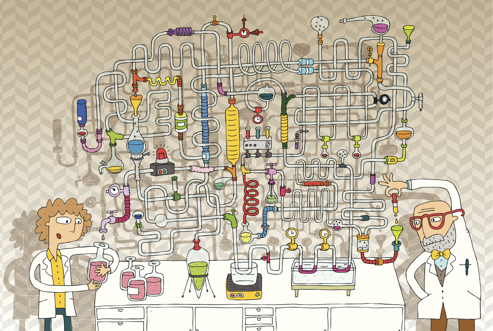Reproducible (Linked) Data Science is complicated...
Reproducible (Linked) Data Science is Complicated
Even just specifying the used input data is complicated, because:
- We often use multiple datasets from different third parties
- But often just specific subsets of these datasets
- And they often have many different versions
- And finally we publish everything in papers, which are not designed to reproducibly report such studies
Specify Input Data:
Current Best Practice
In papers:
"... we used DisGeNET-RDF version 4.0 [32]"
In code:
wget http://rdf.disgenet.org/download/v4.0.0/gda.ttl.gz # Run analysis here
Requirements and Related Work
We need:
- Linked Data versioning
- Cryptographically reliable dataset identifiers
- References to subsets of larger datasets
Related work exists for each of these points individually, but not for the combination of them.
Nanopublications

9M Nanopublications on the Server Network

The "Overhead" of Nanopublications

Trusty URIs
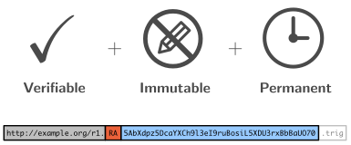Approach: Granual Versioning
Approach: Granual Versioning
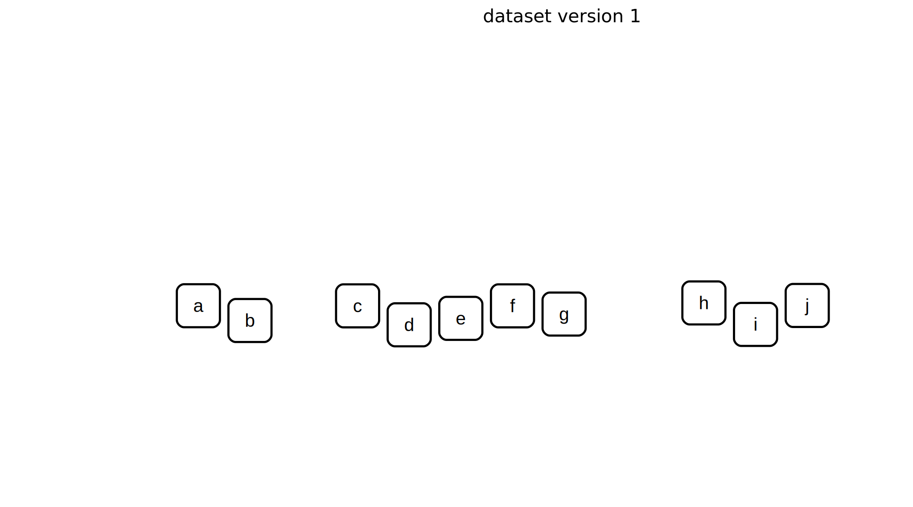Approach: Granual Versioning
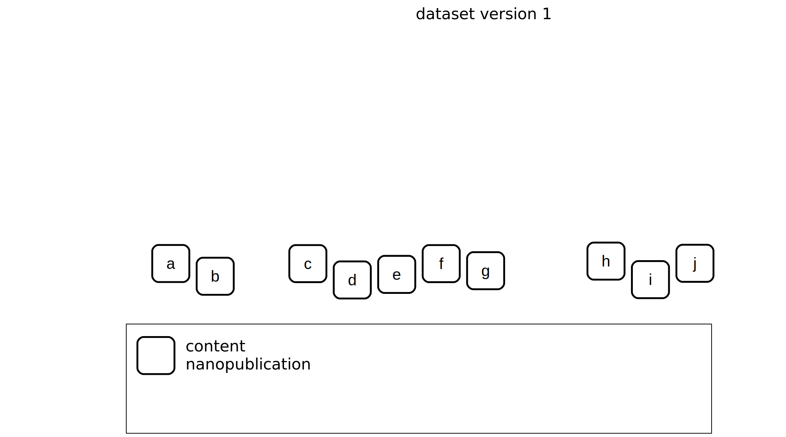Approach: Granual Versioning
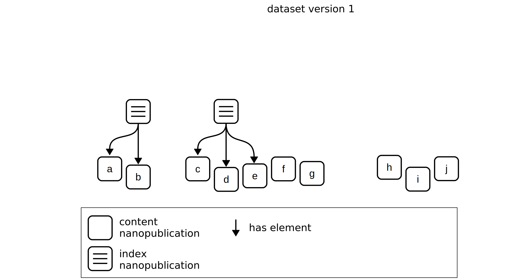Approach: Granual Versioning
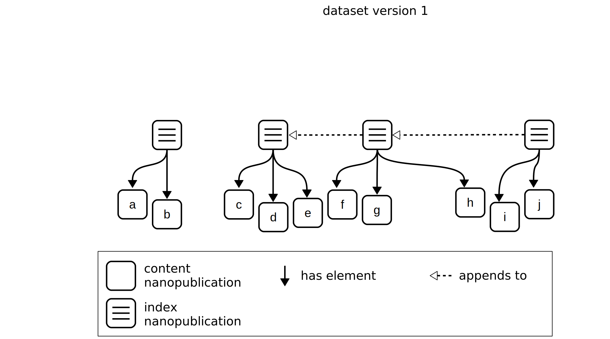Approach: Granual Versioning
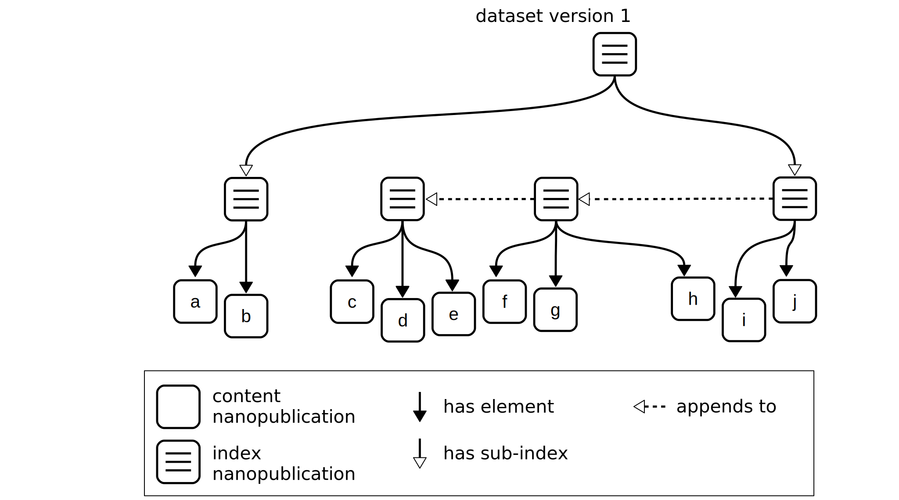Approach: Granual Versioning
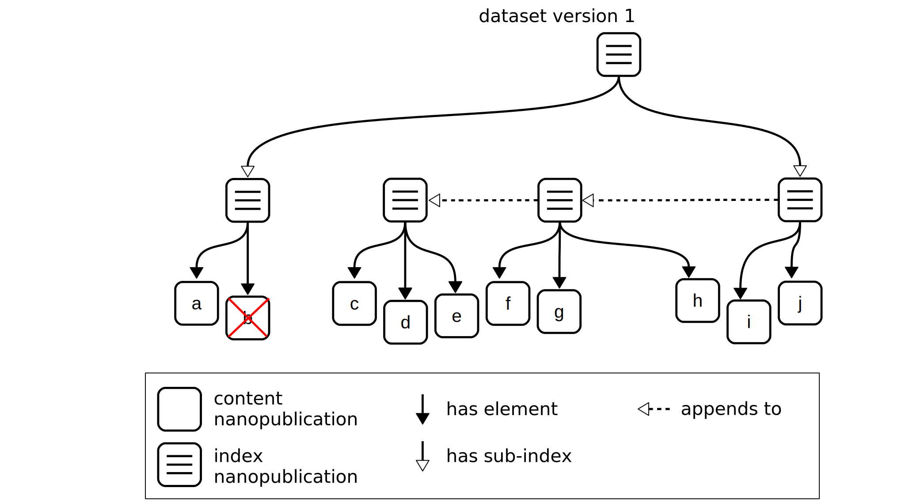Approach: Granual Versioning
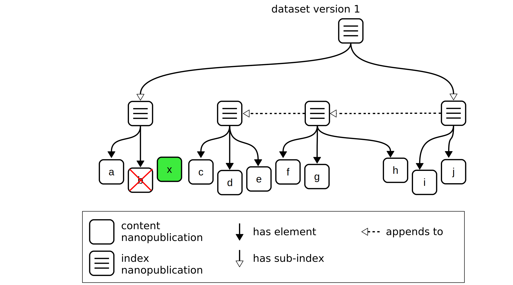Approach: Granual Versioning
Approach: Granual Versioning
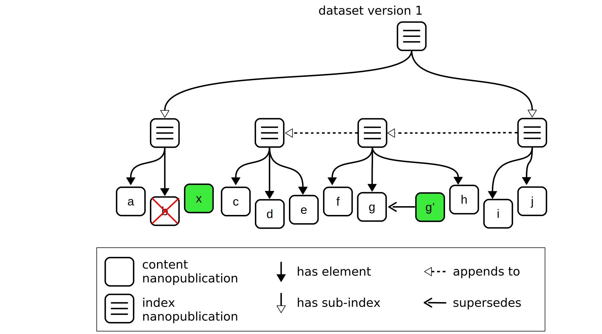Approach: Granual Versioning
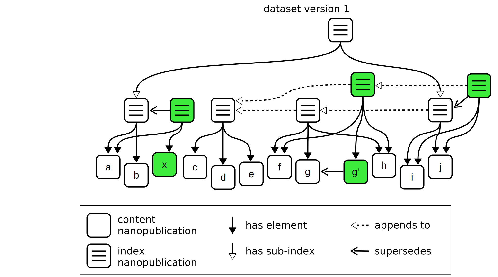Approach: Granual Versioning
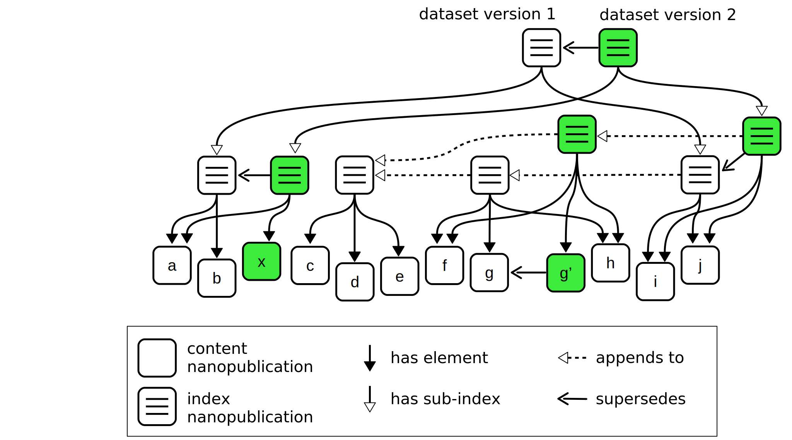Approach: Granual Versioning
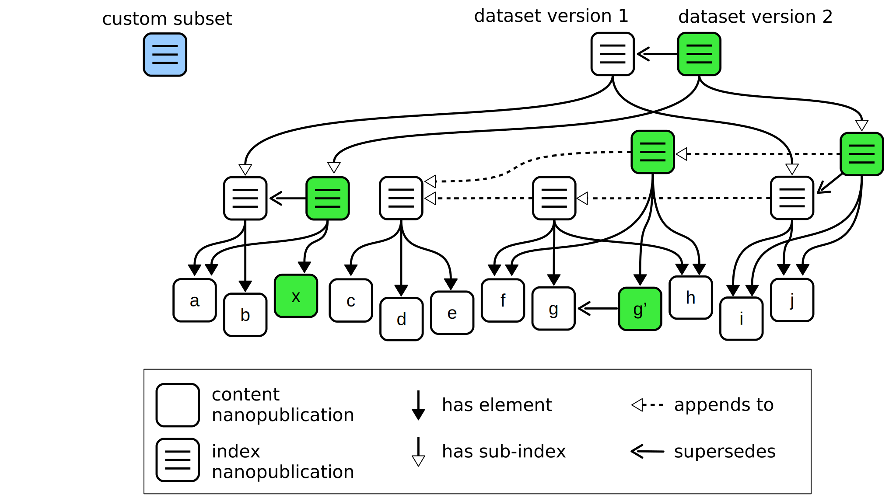Approach: Granual Versioning
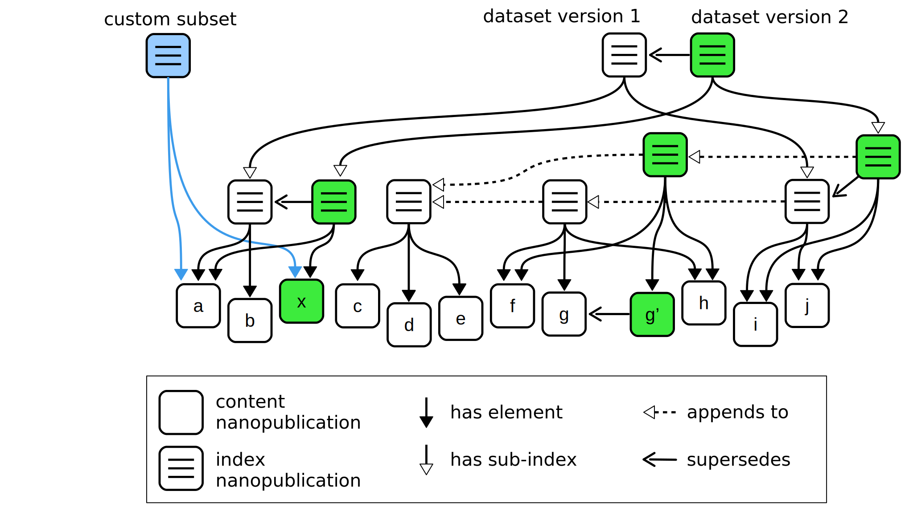Approach: Granual Versioning

Evaluation 1
How well does it work on the data publisher side?
Evaluation based on WikiPathways, a community-curated open database of biological pathways
Nanopublication version of WikiPathways dataset:
- ~ 10 000 nanopublications
- Monthly releases over 11 months
WikiPathways Versions
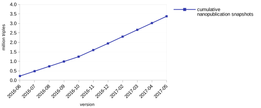WikiPathways Versions
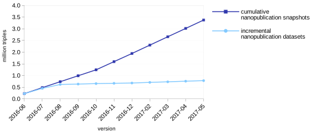WikiPathways Versions
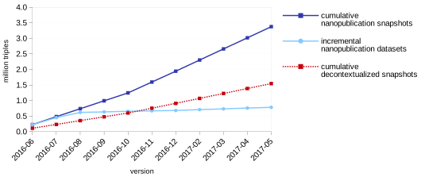WikiPathways Versions

Evaluation 2
How well does it work on the data consumer side?
Evaluation based on DisGeNET, a database on human diseases and their related genes
Nanopublication version of DisGeNET version 4.0:
- 1 414 902 nanopublications
- Highly cited: 31 publications in 2017 (until 5 May)
Used DisGeNET Subsets

Download of Typical Subset
Downloading full dataset from DisGeNET server
VERSUS
Downloading 18 098 nanopublications through the server network

Data Publishing with Nanopublication Datasets
Researchers can now exactly specify their input data.
In papers:
"... we used DisGeNET [27]"
[27] Nanopubs extracted from DisGeNET v4.0.0.0. Nanopublication index http://purl.org/np/RAu0PUrg-M8HxkOiYRXkTg7r9fgOIzFZNINj8q7ywN rdM, 9 May 2017.
In code:
np get -c -o data.trig \ RAxMyDRaM8RmKGNiEe7dQPRUTuz616iI-N2T-H3MPYmXk # Run analysis here
Nanopublication Datasets Pay Off
Price of nanopublication approach is offset by:
- the benefits of incremental versioning
- and by being able to refer to exactly the needed subset of a given dataset
Future Work
TODO